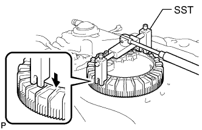

FUEL PUMP (for Single Tank Type) > REMOVAL |
| 1. REMOVE FUEL TANK SUB-ASSEMBLY |
Remove the fuel tank sub-assembly (Click here).
| 2. REMOVE FUEL SUCTION WITH PUMP AND GAUGE TUBE ASSEMBLY |
 |
Using SST, loosen the retainer.
Remove the retainer.
Remove the fuel suction with pump and gauge tube assembly from the fuel tank.
Remove the gasket from the fuel tank.